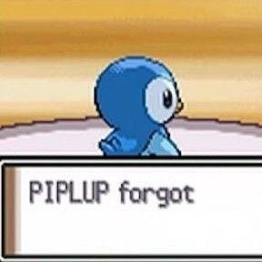

¡Hola mundito!
Me llamo Catalina Butos me pueden encontrar como catita-b en Github
Tengo 22 años y soy estudiante de Diseño UC que está en su cuarto año. Como dato freak es que me puedo poner una pierna detrás de la cabeza Σ(°△° ꪱꪱꪱ)
Esta es mi primera prueba de Introducción al Desarrollo Web desde el Diseño, un Optativo de Profundización de la Escuela de Diseño UC.
Aquí puedes echarle un vistazo a las páginas que preparé usando HTML, CSS y p5.js, una bibliteca de JavaScript:
En la segunda página interior puedes ver cómo adapto un ejemplo de p5.js a página completa. El ejemplo se llama "Animation whit Events"